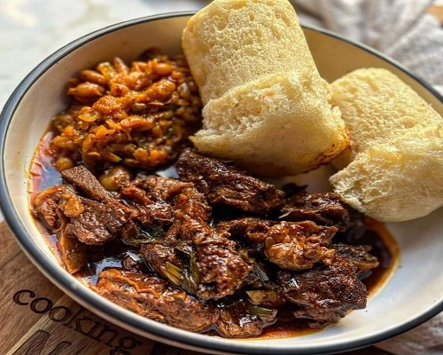
steam bread and meatbeef and rice
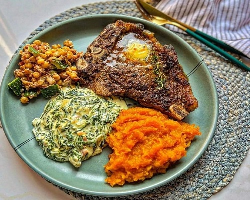
meat and vegies with beetroodechecken and mixed pasta sause
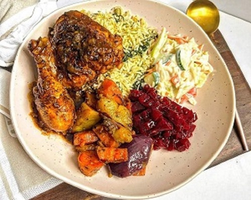
rice and checken
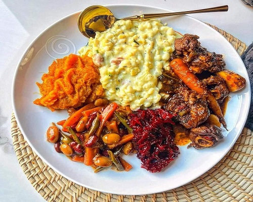
creamy samp and beef stew
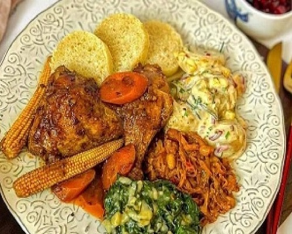
creamy pasta spinash and cheecken
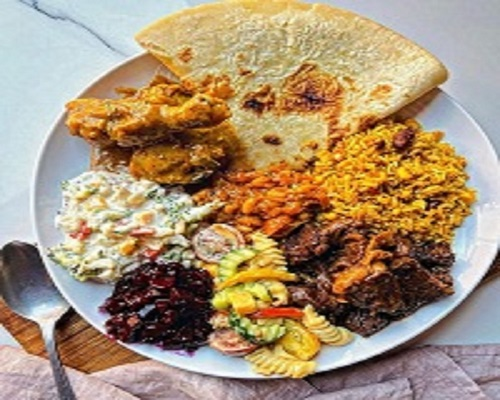
totila and vegies with meat
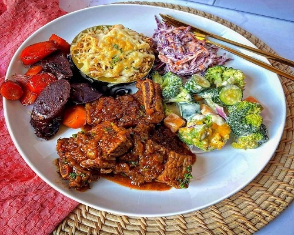
motton stew with greek salad
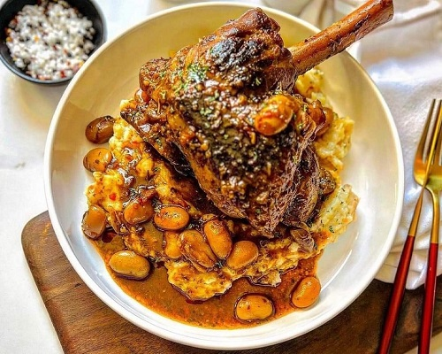
lamb and mash potato in gravysamp beef and carrots gravy
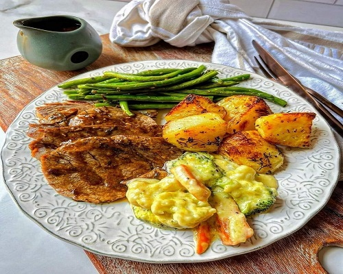
eggs and green vegies
Modern-Cusions
steak and pears
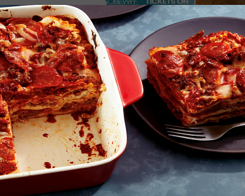
hot lasagnia
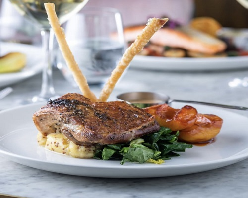
startersfood displayed on table for eventbaffeiself-service catering food
rice and vegies
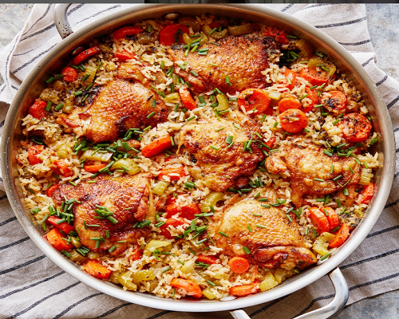
potjikoisvegitable soupmeat and papoisterscake